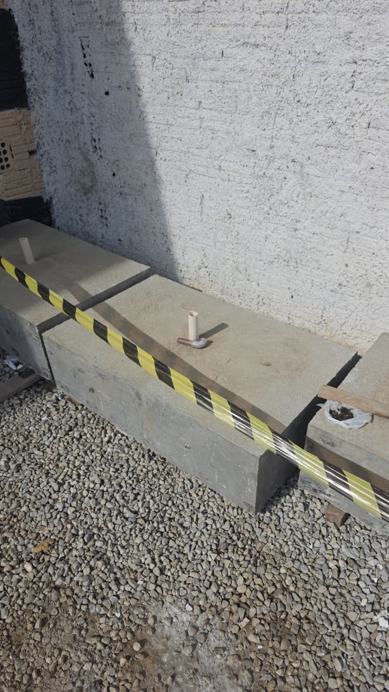
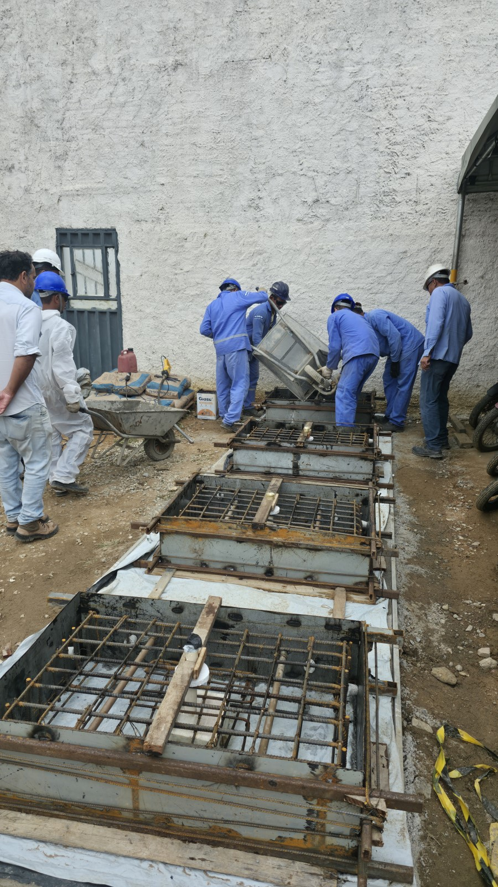
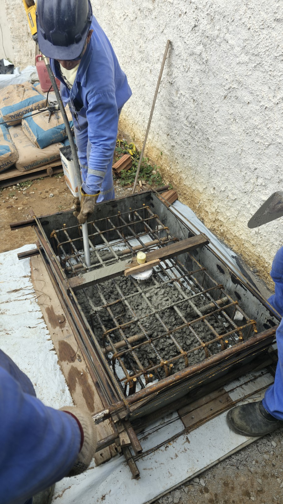
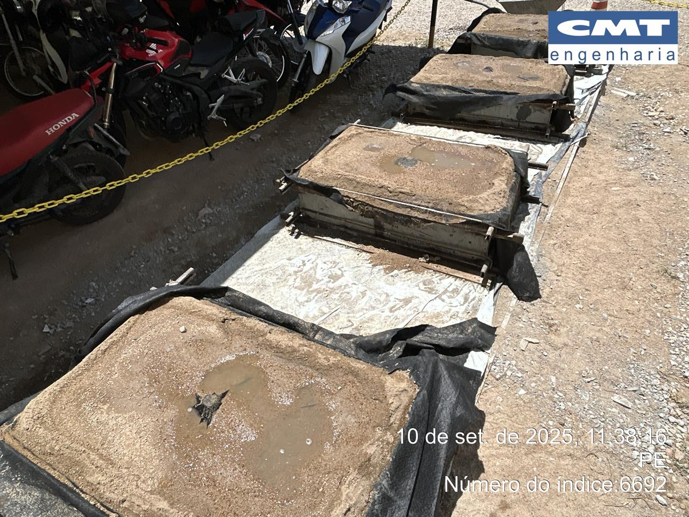
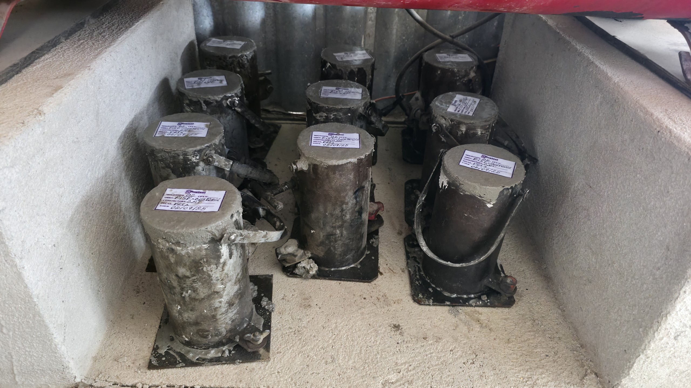
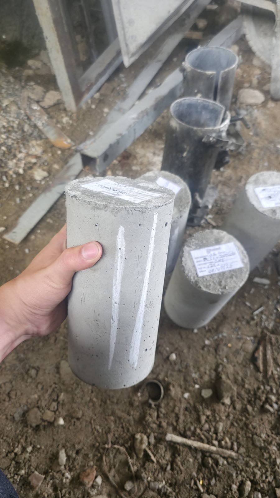
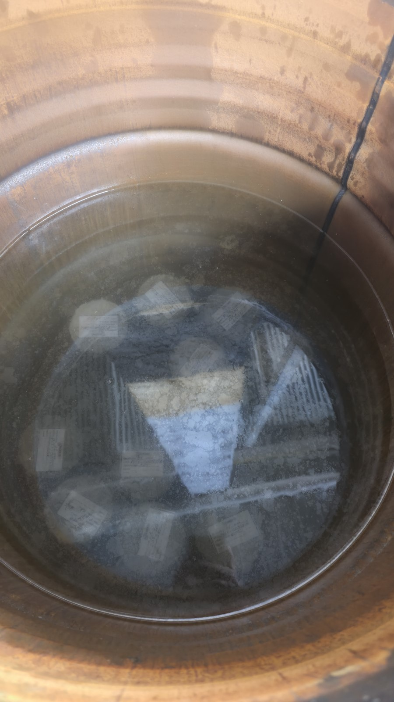
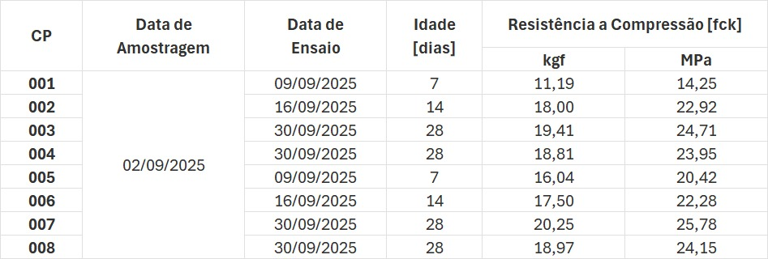

2 imagens pendentes
Confecção, instalação e amostragem

bloco confeccionado

concretagem

adensamento

processo de cura
aplicação
reaterro & compactação a percussão

confecção

desmolde

cura

resistências obtidas através do rompimento axial em laboratório da Ruptest (NBR 5739)